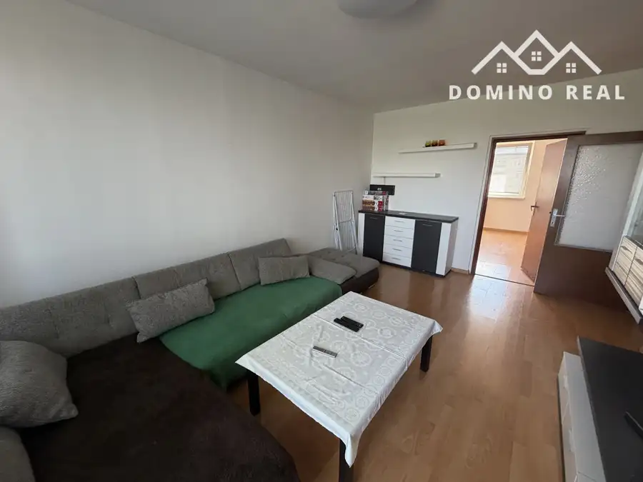
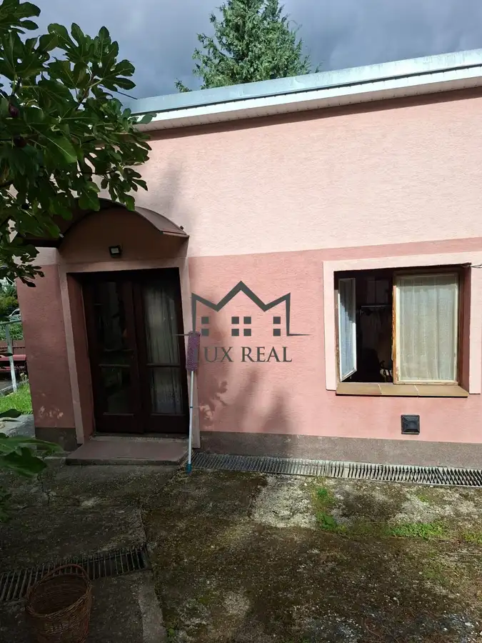
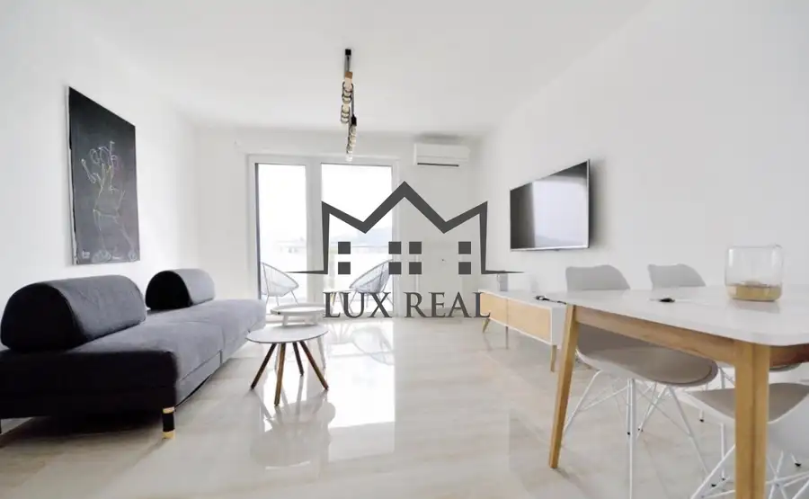

Predaj 1 izbového bytu po rekonštrukcii
Vrbové
- Dispozícia1-izbový
- Plocha39 m²
- Poschodie5. z 7
- StavKompletná rekonštrukcia
O nehnuteľnosti
Ponúkame Vám na predaj 1-izbový byt na ulici 6.apríla vo Vrbovom pri Piešťanoch.Byt o výmere 39m2 vrátane pivnice s loggiou (3,14m2) sa nachádza na 5/7 poschodí s výťahom. Dispozícia bytu ponúka: kuchyňa,obývačka/spálňa, kúpeľňa so sprchovým kútom, WC a chodba.Orientácia bytu je juhozápad. Byt sa predáva zariadený. Mesačné náklady cca 100eur pre 2 osoby.Nachádza sa v centre mesta, v blízkosti autobusová zastávka, obchody, pošta, banka, reštaurácie, priehrada Čerenec, cyklotrasa Vrbové-Piešťany,5.min dialničný privádzač BA-ZACena nehnuteľnosti je 89.999€ k cene bude pripočítaná provízia pre realitnú kanceláriu, v rámci ktorej sa postaráme o celý proces tak, aby ste sa mohli sústrediť len na svoje nové bývanie – bez zbytočných návštev úradov a vybavovania formalít. Našim cieľom je, aby ste celý proces zvládli komfortne, bez stresu a bez zbytočného vybavovania.Pre viac informácií a dohodnutie obhliadky kontaktujte:Ivona Poláčková +421 948 122 488 ivona.polackova@luxreal.skObytná plocha: 39m²Celková rozloha: 39m²Úžitková plocha: 39m²Vlastníctvo: osobnéStav: prerobenýPivnica: ánoVýťah: ánoZariadenie: ánoZateplený objekt: ánoEnergetický certifikát: ánoOkná: plastové 3-sklá
Parametre
| Cena vrátane energií | Nie |
|---|---|
| Druh | 1 izbový byt |
| Dátum zverejnenia | 21. 9. 2026 |
| Energetický certifikát budovy | nie je |
| Podlažie | 5 |
| Počet lodžií | 1 |
| Počet nadzemných podlaží | 7 |
| Rok výstavby | 1990 |
| Stav nehnuteľnosti | Kompletná rekonštrukcia |
| Typ | Predaj |
| Typ konštrukcie | Panelová |
| Vybavenie | Lodžia |
| Úžitková plocha | 39 m² |
Kde to je


Mohlo by Vás zaujímať

BytNové10 139 000 €3-izbový byt po čiastočnej rekonštrukcii po zníženej cene Piešťany 3-izbový68 m² Ponúkame Vám na predaj 3-izbový byt v Piešťanoch na ulici Mateja BelaByt sa nachádza na 7. poschodí, pričom pozostáva z 3 obytných miestností a…
BytNové3 Cena dohodouGarzónka na prenájom v tichej lokalite Banka 28 m² Ponúkame Vám na prenájom garzónku v tichej lokalite na ulici Lyžiarskej.Garzónka sa nachádza v rodinnom dome ako samostatná bytová jednotka.…
BytNové8 Cena dohodouSlnečný 2-izbový byt v blízkosti centra Piešťany 2-izbový49 m²4. podlažie Ponúkame Vám na prenájom slnečný 2-izbový byt na 4. nadzemnom podlaží bytového domu na Nitrianskej ulici, v blízkosti obchodného centra Aupark.…